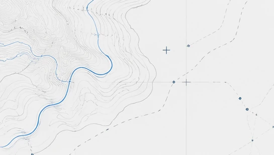
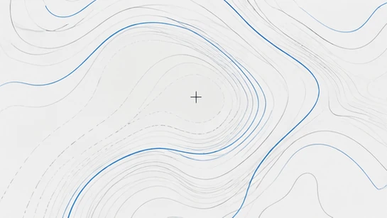

GISIlustración decorativaPendiente de contenido
Espacio para un trabajo GIS
Aquí se documentarán el contexto, las herramientas y mi participación en un trabajo verificado.
GIS / WebGIS · Desarrollo web
Soy Marina. Conecto mapas, datos y código para dar forma a experiencias digitales claras, con sensibilidad por el diseño.
01
Del territorio a la pantalla.
Soy Marina Fernández Martín, graduada en Ciencias Ambientales por la UAM y formada en el MasterGIS de Esri España. Me interesa cómo los mapas y los datos nos ayudan a comprender el entorno.
Durante mis prácticas técnicas en Esri España trabajé con soluciones WebGIS. También he participado en la validación de datos ambientales de la Red de Control y Vigilancia de la Calidad del Aire de Canarias.
Ahora curso el bootcamp de Desarrollo Web Full-Stack de Neoland. Sigo aprendiendo a unir código, pensamiento geoespacial y diseño visual.
En formación continua02
Herramientas utilizadas en prácticas y tecnologías que estoy aprendiendo.
03
Este espacio irá reuniendo mis trabajos. Por ahora, las tarjetas son marcadores de contenido; las imágenes son recursos gráficos decorativos, no capturas de proyectos.

GISIlustración decorativaPendiente de contenido
Aquí se documentarán el contexto, las herramientas y mi participación en un trabajo verificado.
Pendiente de contenido
Un lugar para presentar un ejercicio o desarrollo, su proceso y los aprendizajes que me llevo.

VisualIlustración decorativaPendiente de contenido
Una ficha reservada para una pieza que pueda compartir, con su objetivo y proceso de creación.
04
Me interesa seguir creciendo en GIS, WebGIS y desarrollo web.
Si tu equipo trabaja en estos ámbitos, me encantará conoceros.